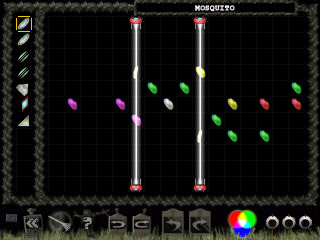

| | |
| | |
| Level | Mosquito |
| Difficulty | Suspense |
| | |
| Author | Steve Verreault |
| Pieces | 7 |
| | |
| | |
| | |
|  |
Text Hints |
| | Cryptic | "They whiz around back and forth..." |
| Good Hint | "Use the slit mirrors first" |
| Great Hint | "Back reflection is used" |
| Great Hint | "Send green back through and to a slit mirror!" |
Picture Hints
Remember that, while picture hints most often show a portion of the solution they occasionally only suggest the solution by showing a pattern used.
Level Notes (WARNING: Contains hint! [and a tad long-winded])
Several of these hint pages will contain hints marked as "Cryptic". Such hints do not directly refer to the layout or
laser beams. However, when interpreted the right way these clues usually translate into "Good", "Great" or even "Super" hints.
Some of these Cryptic hints might even translate into "give-away" hints, otherwise known as "Spoilers".
This level contains the Cryptic hint: "They whiz around back and forth..."
Obviously this does not refer
directly to the pieces or beams, but rather to the level's title: "Mosquito". Mosquitos certainly
do "whiz around back and forth", so what does that have to do with the level? Well if you know the solution it may be clear.
If not, this subtle clue could make all the difference. At some point you will split a yellow beam with a prism and green will
emerge. The question is "how to hit all of the green coins?". It is easy to hit the middle 2 and at least 3 on the right but what
about the last one? One way to get most of them is to send the beam into the threeway without splitting and then
use a refractor and 2 mirrors to hit all but the last one. Instead what you discover is that you DO wind up getting the
last one! Why? Because of back-reflection. The green beam goes up through the slit mirror, hits a coin and a mirror
then another coin and finally runs right up against the other slit mirror which in turn sends it right back to where it came from.
It then jumps up into the splitting side of the threeway and hits the last coin. So the path of the green beam whizzes around
back and forth until the level is solved.
If we know that something whizzes around back and forth then we know that at least
something is being reflected back (or back-reflected). So our Cryptic hint translates as follows:
"They whiz around back and forth..." = "Use back-reflection!"
Which is a "Great" hint!
|
Back To Index
|